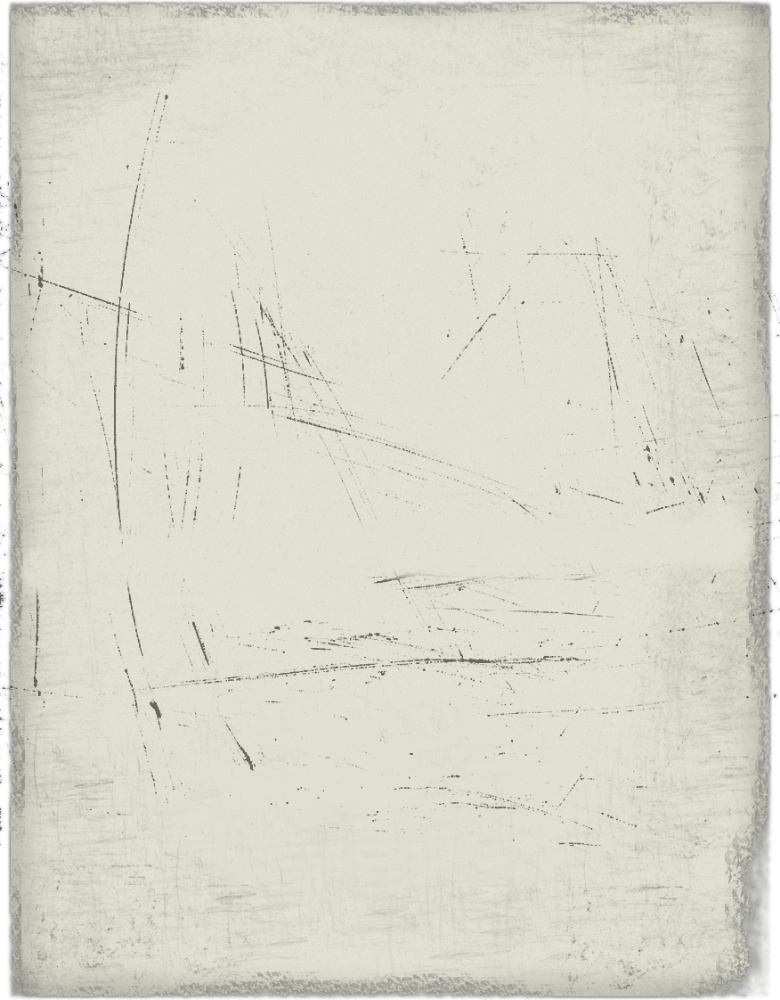

 |
THE HISTORY OF THE SUPER FAMILY
The exact details of the Super Family's beginning have since been lost in time, but its history has recently been explained by Dr. Seinyor and Stacie... It is also worth noting that in THIS Lego world, humans and Lego people lived amongst each other. Dr. Seinyor, Stacie, Pepper, The Evil Brother, and Aleena are all humans.
It all started in Legoland (aka The Lego Universe). Dr. Seinyor was seen by his world as a reclusive and lonely man, and he was always going on solo expeditions by himself in various parts of the wilderness. There he found lost temples and shrines, with much treasure. One of them, a very small monument under a waterfall, held a gold plate with various pulsing runes cut into it. Dr. Seinyor took this artifact, Indiana Jones-style, and noticed that there was something... different about this metal. It empowered him, made him feel... heroic. His first thought was to bring this before the Legoredo Museum of Legendary Artifacts and present it to the authorities there. Dr. Seinyor was told he could put together a presentation for the artifact, and he looked upon it as his path to fame and glory.
However, the presentation was a complete disaster and Dr. Seinyor was ridiculed, he became a joke among the Lego people. The gold disk was no longer radiant and polished, but dull and scratched. It looked like a dinner plate with gold paint splattered on it. Dr. Seinyor was crestfallen; he decided that he would be nothing more than a failure or a hermit, and he set sail on his lonely, rickety ship out in the ocean with the few belongings that he had.
Stacie and her brother, Pepper, were at that time living in a desolate town in the mountains of the Lego continent on the Lego world, ironically only 80 miles from the jungle where Dr. Seinyor had discovered the mysterious gold disk. The town had a population of only 50 people. Stacie and Pepper's adoptive and abusive mother, Aleena, constantly forced the two to work for her while she enjoyed taking vacations away from the town, on exotic beaches someplace. Aleena had raised the two "since [they] were whining demons". It only occured to Pepper and Stacie when they were both around 16 that they could run away from this terrible existance.
One night they decided to hike to the highest mountain of the valley that the town was in and cross over it, hoping to find a better life on the other side. Soon after they set out, it began to downpour as it had never done before in Legoland. The valley began to flood, and water filled up the world. It was an event of biblical proportions. The rain finally stopped, but it had forced Pepper and Stacie to the peak of the mountain, the only land for miles around.
After a few days up there, they saw what looked like a ship on the horizon. They signaled it down, and it turned out to be none other than the ship of Dr. Seinyor! Dr. Seinyor rescued the two, and continued on the wandering voyage on the ocean. During the next few weeks, they all aquainted themselves with each other, and Dr. Seinyor offered to watch over the two until they could find their true parents.
Shortly after that, the trio reached land, but not intentionally. The three were sleeping on the deck of the ship when it suddenly crashed into a series of rocks. They were flung high into the air and landed on a sandy, warm beach. When Dr. Seinyor looked up, a group of surfers were looking down at him. "Fancy way to make an entrance to Lego Island, man."
From that point, Dr. Seinyor, Stacie, and Pepper decided to settle in Lego Island. Dr. Seinyor began to build the incredibly famous House next to the Mountain Park in the residential district of the island. During the construction of the House, the kids and Dr. Seinyor became aquainted with the town, taking up different jobs and making new friends. Pepper became a pizza delivery boy for Papa and Mama Brickolini, both of whom still claim to this day that Pepper is their rightful son, but they just ignored them. Stacie worked all over the town, at the police station and at the hospital.
After a few weeks there, Pepper accidentally released the Brickster, an infamous criminal of Lego Island. He was bent on deconstructing the island and conquering it as his own. Dr. Seinyor and the kids helped the townsfolk and the police try to track him down, but it was no use. He ran through the town, destroying everything, and then quickly went into hiding to "take a rest".
Dr. Seinyor began experimenting with the strange gold disk, and he discovered that it truly DID hold immense power. One night, he was sitting behind his house on the beach, experimenting with the gold disk. He touched a small white rune on it in the lower left corner, and suddenly the world began to spin. He was tossed into the ocean by a gust of wind and walls of water began to rise up around Dr. Seinyor. He was spun around faster and faster and he began to rise up from the water. Bolts of lightning struck him from the walls of the water funnel around him, and the world became a room of white light. Dr. Seinyor began to pass out, but before he did he heard the words, "You... are... chosen..."
Once he woke up, Dr. Seinyor found himself on the beach in the daytime, and in the town he heard screams and cries for help. It was then that he noticed something... strange about himself. He felt incomprehensibly strong, and felt... light, almost as though he weighed nothing. Dr. Seinyor jumped up, and he didn't come down, but rather stayed in one spot. Moving around slightly, Dr. Seinyor found that he could turn off gravity at will and levitate. In layman's terms, he could FLY! And he did so, flying up into the air at the speed of sound, enjoying this new skill. He picked up huge boulders on the beach and threw them into the water as though they were mere pebbles.
Dr. Seinyor almost completely forgot that the Brickster was terrorizing the island, and at that realization, he swooped off to gather Pepper and Stacie. He quickly explained his newfound power to them, and while they were completely baffled, they all knew that there was a town to be saved, so they left it alone till times were safe again. Dr. Seinyor formulated a clever plan for the capture of the Brickster using his enhanced intellect, and this would be the plan that would catapult them to the bastion of fame they now currently reside in...
Pepper used his screaming fast skateboard to find the Brickster, who was on a motorcycle, zapping all the buildings into a mound of bricks. Stacie set up a series of traps with the help of the police, with Pepper leading the Brickster into them with tasty pizza from the island's Pizzeria. The Brickster was thrown out of his cycle by the cleverly laid tar trap, and the newly empowered Dr. Seinyor picked up the ball by utterly beating the crap out of the Brickster with his brute strength. He then finished the job by literally chucking the Brickster back into jail.
The trio was revered for this act of courage, and the people marveled at Dr. Seinyor's new powers. The three were now the new superheroes destined to defend the world from evil. News of their accomplishments and heroism soon reach the Lego mainland, and it spread like wildfire through all of the world. Dr. Seinyor decided that this was what they were destined for, and offered to train Stacie and Pepper in the ways of the superhero. Stacie accepted and Pepper surprisingly refused (apparently he wanted nothing to do with heroism, but agreed to tag along), so Dr. Seinyor began training Stacie using his improved knowledge. As such the gold disk was no longer needed to transform people into superheroes, Dr Seinyor could now simply teach it to his apprentices. It was during this training that Dr. Seinyor officially adopted Stacie.
The "Seinyors", as they were now known, relocated to a more central position in the world, which involved Dr. Seinyor physically picking up the house and moving to the mainland. It is still unknown where they ended up as an exact location. After the dynamic duo of Dr. Seinyor and Stacie had gone through a few months of fighting crime, they were pretty much known by the whole world. News of them eventually reached the Evil Brother, Dr. Seinyor's twin, sinister brother. The Evil Brother had been separated from Dr. Seinyor for many, many years, and he finally knew the whereabouts of his envied sibling. The Evil Brother had always been jealous of Dr. Seinyor for reasons lost in time, and he was even more jealous now that he was an honored hero among the people of the world. He began to plot against Dr. Seinyor, and he gathered allies through the policy of "The enemy of my enemy is my friend". In doing this, he met up with the Evil Sister, another sibling of Dr. Seinyor's. The Evil Sister was very young in comparison to the two others, as she was approximately 19 at the time, 3 years older than Stacie.
The two sides had various encounters with one another, with the good Seinyors always toppling the evil ones. Dr. Seinyor sensed that more trouble was brewing in the universe, and he began seeking out heroes from all of time and all different places to assist. Dr. Seinyor first met Crash Bandicoot and his team, fighting against the insane Dr. Neo Cortex. The Seinyors assisted and put the Doctor in his place. Dr. Seinyor offered the Bandicoot team (Crash, Coco, and Aku Aku) a place in the Seinyor's then unnamed team, but Crash kindly refused because all he wanted to do was sleep and have fun for the rest of his life. Instead said that he would stay in touch with them in case they ever needed anything. The Seinyors, over the next few years, became very good friends with Crash and friends.
The plight of the Jedi Qui-Gon Jinn in the Star Wars world reached the Seinyor team, and they rushed to help. During their fight against the Sith and the Trade Federaton there, they met new friends, and Dr. Seinyor took note of the way the Trade Federation battled, despite the fact that it was an evil organization. Qui-Gon taught the Seinyors to fight like Jedi and use the Force, as well as use a lightsaber. These skills would help the Seinyors in many fights to come. Sadly, Qui-Gon Jinn died by the time victory had been achieved, but all was peaceful again. Soon afterward, Padme and Anakin showed up on the doorstep of the Seinyors. They explained that they did not come to fight, but rather to tag along and help just as Pepper was doing. Dr. Seinyor warmly accepted them in, and they have been in there ever since.
Dr. Seinyor learned of three little girls known as the Powerpuff girls,B lossom, Bubbles, and Buttercup, who had superpowers and were not just fighting crime, but EVIL as well! Dr. Seinyor sought them out, and offered to eliminate all their enemies. They did so together, and during this the girls, explained that their "dad" (a professor who had created them from a mixture of sugar, spice, everything nice, and with an accidental addition of Chemical X, which subsequently gave them their powers), was going insane and treating them like trash, basically. Dr. Seinyor personally went down and punched him in the face. Dr. Seinyor believes he will come out of that coma, and he believes it with all of his heart. While the "good professor" was out cold, the Seinyors and the Powerpuff girls departed to the house, with Dr. Seinyor adopting the three.
The team decided that they couldn't go one without an appropriate superheroic team name, and set to creating one. After a few days of thinking, they all agreed on one name, that name being The Powerteam. This name was then transferred to the media, and all in this alliance were immortalized as its original members.
Always looking for new ways to expand the Powerteam's scope, Dr. Seinyor took the team on a trip to Kanto, a continent famous for its Pokemon culture. It was here that the Team and its "followers" stayed for a few more moths, learning the ways of Pokemon training. Dr. Seinyor earned his gym badges, and toppled the champion of the Pokemon League. All of the members of the Powerteam assembled a team of Pokemon and did the same, but Dr. Seinyor was by far the best Pokemon Master there.
Much like Dr. Seinyor had met Crash Bandicoot, he met Spyro and Meg, two dragons, in the same way. The two insisted that they needed no help in fighting against their nemesis, Gnasty Gnorc, and Dr. Seinyor said that they could ask for help any time they wanted. They also met up with Gex and Gexerica, and the two gave the same response regarding their fight against Rez. However, they all kept in touch much like Crash's crew.
During this time, the Evil Brother once again went after the Powerteam, this time launching an attack that forced the Powerteam to try harder than they ever had to stay alive. The Evil Brother stole the Pokemon of the Powerteam one by one, making them become nervous and concerned. He captured the kids and held them hostage, forcing Dr. Seinyor come to his lair on his own. Using his remaining Pokemon, his Jedi skills, and his superpowers, he made it inside, and found Pikachu dangling precariously above an abyss in the middle of the room, called "The Portal of Chaos" by the Evil Brother. Stacie was chained to the wall with the Evil Brother's lightsaber held across her neck by an unknown force. The Evil Brother first challenged Dr. Seinyor to a Pokemon battle using all the captured and enslaved Pokemon once under the ownership of the Powerteam. He threatened to kill Pikachu by cutting the cable holding her if Dr. Seinyor would not fight with the few Pokemon he had left. Dr. Seinyor's Pokemon were already exhausted from the fight in, and it was agonizing for Dr. Seinyor to pit them against each other. Dr. Seinyor lost that duel, and the Evil Brother laughed the most evil laugh ever to celebrate his victory. Using a strange series of Pokeballs, the Evil Brother stole all that remained of Dr. Seinyor's Pokemon. "Now, I'll deal with you." said the Evil Brother, as he proceeded to draw his own lightsaber and lunge at Dr. Seinyor. Dr. Seinyor drew his own and parried in defense. It was an intense battle that raged precariously close to the edge of the dark abyss, but Dr. Seinyor was able to overpower the Evil Brother and toss him into the Portal of Chaos, forever banished to a faraway world of eternal darkness. Dr. Seinyor rescued his Pokemon and Stacie, as well as the kids, who had been captured too.
Dr. Seinyor, upset because he had no boys of his own, decided to make 3 boys like the Powerpuff Girls. Using the parallel for the creation of a girl from the fabled tale for a boy, he added snips, snails, and puppy dog tails with Chemical X. Thus, Butch, Boomer, and Brick were born, and they joined the Powerteam, accepting the Powerpuff Girls and Stacie as their sisters, and Dr. Seinyor as their father.
While traveling through Johto, a neighboring country to Kanto with a similar Pokemon culture, the Powerteam met Grandma Pikachu, who promptly invited them to stay with her whenever they wanted. The Team became very good friends with Grandma Pikachu, and made it a tradition to go visit her house in the northern forests of Johto every fall.
Dr. Seinyor began to have big aspirations for the Powerteam, and he decided to expand the scope of their defense to a galactic scale. In order to do this, he set to work building a very large space ship, almost the size of a small city. He even began to build an early army for the ship, as well as experimenting with the gold disk once more, using it as a power source for the colossal ship.
It took many seasons, but once the Ship (as it was simply called) was finished, the Powerteam's House was built into it, and everyone moved to live on it. The Ship spent most of its time orbiting Earth, but the Powerteam used to to travel to different worlds and meet new people there.
Once again working with the mysterious gold artifact, Dr. Seinyor discovered that the thing could open portals to anywhere in the universe, at any point in time. Tinkering with it, he eventually found out how to adjust it to his liking. Dr. Seinyor opened a portal to the Redwall universe, and secretly investigated the situation there, in different parts of time. There he found heroes who were various animals, but walked and talked like humans! Dr. Seinyor introduced himself to them all, and he made friends with the warriors and their families quickly.
The members of the Powerteam also began piloting Armored Cores as a hobby, which were humanoid military robots the size of small buildings. With their diverse arsenal and ability to boost around with small rocket-like engines, one "AC" with a skilled pilot can turn the tide of a battle single-handedly. Dr. Seinyor is by far the best pilot out of all the Powerteam, having many different AC part configurations, and he still uses his ACs in combat to this day. He has become registered as a Raven AC Pilot, due to his dedication and help boosting the Armored Core's rise to military dominance.
Sometime while building a new mech in an AC garage, Dr. Seinyor was walking to the nearby AC parts store, when he was suddenly knocked off the catwalk he was traveling along into a vat of joint grease. Which is disgusting. Looking up, Dr. Seinyor saw the most beautiful woman he had ever seen. She was trying not to laugh while apologizing continously. She helped pull him out, and introduced herself as Nell Aulter, manager of the Raven Arena, the competitive sport that pits AC vs AC for spectators. Dr. Seinyor nervously introduced HIMself, and fully impressing her in the process. The two became good friends from then on, with Nell showing great support for the Powerteam's intentions...
-----------------------------------
A few years later...
-----------------------------------
After fighting against numerous enemies, the Powerteam noticed that crime and evil were rising in power on all sides, and they needed help. It was time to create a fighting force which the likes of which had never been seen, a force whose sheer arrival would make simple wrongdoers scatter, and make megalomaniacs think twice about doing anything "questionable". It was time... to grow.
First, Dr. Seinyor wrote up invitations to the Powerteam and sent them out to heroes he had met in the past, assuring them that now was the time to unite. He stated in these letters that friends and family were welcome to come with the invited as well. The first wave of summons went to early and friends of the Powerteam, such as Crash Bandicoot, Gex, and Spyro the Dragon. The second wave went to the various denizens of Mossflower, specifically to heroes of Mossflower (The countryside of the Redwall universe) and their families. The third and final wave went to some recently formed alliances, such as Louis the Trumpeter Swan, a swan who hadn't truly fought evil before, but expressed an interest in joining the Powerteam.
While all the invites were being considered by their... targets, Dr. Seinyor built up a colossal robot army, inspired by the robot armies of the Trade Federation he had fought against so long ago. The Battle Droids were exactly like those of the TF, except they were much more reliable, built with care, and designed to take orders from a class of droid above them or by a human commander. Human commanders were recruited, who would direct enormous battalions of 100,000 or more droids. Transport ships for these troops were also manufactured, along with destroyers and spacecraft carriers.
Dr. Seinyor, inspired by the construction of "tank" Armored Cores, decided to build one for this new army, and to take the place of the Powerteam's ship. But in order to do this, the AC would have to be scaled up immensely. Dr. Seinyor laid out plans for one that had the titanic dimensions of 4,000 km long, 1,600 km high, and 2,000 km wide, which dwarfed the originally "huge" Ship. The AC was built with tank legs, and had humanoid features such as a head, chest (core), and arms. The legs were replaced by a tank chassis, which made up most of the mass of the "AC" as it was simply known from that point on. Construction finished in an alarming 6 months. The AC was large enough to hold several manmade countries, complete with uncharted wilderness. Cities were founded, and a large number of beings from all over the galaxy made a pilgrimage to the vacant living space offered by the AC. The Army was stationed inside the "legs", and the AC was battle-prepped, given all of the stereotypical features of a space battle station, and an arsenal of incredible weapons that could destroy whole worlds and decimate opposing armies.
The response to the letters sent out by Dr. Seinyor was tremendous; every letter sent out had returned a "yes" answer. Those who had accepted moved to the AC's head through use of the portal-creating artifact. The famous Powerteam house had been renovated, enlarged and placed in the AC's head, to accomodate the large amount of newcomers. Everyone eventually settled into their new home, getting jobs and spending time with one another.
Dr. Seinyor proposed to Nell soon after, and she was invited to become a fighter in the Powerteam. She enthusiastically accepted Dr. Seinyor's first offer, but was unsure about gaining superpowers. Nell eventually learned to get used to having them, due to the fact that Dr. Seinyor gradually trained her and a few others to learn to use their new powers.
The two were happily married 4 months after, during a large ceremony that also christened the new AC by the traditional "bottle break" method. Being in space when this happened, it wasn't a very difficult maneuver, and Nell MISSED the first time. Boar the badger suggested a new name for the Powerteam soon after at the reception, and once he whispered it to Dr. Seinyor, he was allowed to announce it to the gathering.
"This fighting alliance of ours has grown from when Dr. Seinyor first set sail on that ocean that one night... and has vanquished many enemies. We now have our own army and space station, for freakin' sake. As such, it is time that we evolve from just a mere 'team'. My friends, we will now be known as The Super Army."
The newly formed Super Army began a campaign across space and time, ratting out evil wherever it came up. Dr. Seinyor, now with friends to help, began a project to harness the power of the mysterious disk, named the Axis project. They began by building a huge facility that linked the plate to the AC's robust generators and power reactors. The AC had an immense jump in power as a result, but the plate shined as brilliant as ever. Dr. Seinyor then worked for the next several weeks nonstop, studying the Kingdom Hearts and Parallel Universe theories. He then began writing plans for a Portal Room, something that would allow anyone to travel anywhere in space and time, across all boundaries, and knowing no limits.
While some of those working with him thought he needed a little more rest to think clearly, Dr. Seinyor insisted on creating the room. It harnessed the power of the plate, creating halls and halls of adjustable portals to different places. The Room was finished over 6 months of strenuous labor. As a first test, Dr. Seinyor opened a portal completely randomly to Makuta's Lair on Mata Nui, in the Bionicle Universe. Seeing a dark figure off in the distance, Dr. Seinyor got scared and immediately jumped back through the portal and closed it (he only closed the "enter" function though, and completely forgot to close its "return" function). Looking around, he realized that they never changed the return coordinates of the portals from the default, which was the front of the American Lego Headquarters. What they were supposed to be were dynamic local coordinates in reference to the AC's physical position in the universe. In layman's terms, a specified "return station" in the Portal Room that was set away from the other portals.
Thinking that all was fine, and it was a simple glitch, Dr. Seinyor set to making Portmarks, or locked portals that would point to a specific location (real-time), marking places that the Super Family considered important to themselves, such as the original homes of its members, and also points that would allow quick and easy communication/negotiations across the universe. These portals were colored blue (differing from the generic glowing green) and placed in a special location, to allow for easy access.
Shortly afterward, the Toa and their crew came up to Dr. Seinyor, looking for help finding the runaway Makuta. They explained that they had come through a portal to this world and heard of the Super Army as being the ones to talk to about runaway megalomaniacs. Dr. Seinyor, now frantic, asked where they ended up when they left the portal. Pohatu said that they emerged out front of a place called the "Lego Headquarters". Dr. Seinyor explained that it was his personal clumsiness that caused the escape of Makuta, and said that they would repair their world. The Toa simply laughed it off and said that it was probably fate that brought them together, and offered to join the Super Army's cause, with or without Makuta on the loose.
Oddly, around this time, the Hundred Acre Wood Gang, which consisted of Pooh, Piglet, and Tigger, sought out the Super Army and wished to join them as superheroes. For those of you finding this strange, Tigger says they came because they wanted to and they're awesome like that. Dr. Seinyor, still a little baffled, accepted them in.
By this time, the Super Army had had ample time to get to know each other, and many traditions were developed. It was Aku Aku who stated that the Super Army looked very much like one big happy family, the way everyone worked so well with one another. Upon hearing this, Boar and Dr. Seinyor decided to change the name of the alliance again...
This time to its final form, The Super Family.
-----------------------------------------------
After a few weeks of rest, Dr. Seinyor set out to harness the last remaining power of the gold disk, the artifact that he had found so many years ago. Looking at the team he had founded, he thought to himself, "I wish this could last forever... but it has to end sometime." Then it hit him. He went up and touched the last remaining exposed part of the artifact, the rest being eclipsed by the mass of cables linked to it. All that was visible was the most enigmatic piece of it, the strange, embossed runic symbol in the center. Dr. Seinyor gathered the rarest materials he could find in the universe, and he asked Boar to with them forge a gleaming metal panel. Dr. Seinyor then asked Cornflower to help him engrave the Super Family Crest into the front.
The panel was now as smooth as glass, and it shined as bright as sunlight, with the Super Family Crest dazzling in the center of it. Dr. Seinyor then asked every member of the Super Family to imbue the plate with their power, and as each one did, their signature inscribed itself into the artifact. Once it was finished, a ceremony was held in the facility where the gold plate was linked to the machines of the AC, and Sunflash was given the honor of placing it on top of the power-parched gold plate. When he did, a peculiar thing happened. The new plate fused to the old one in a brilliant flash of pure white light, and the black, ugly cables around the old plate were severed, but remained loosely tethered to the new plate. The power flowing from the old plate was not interrupted, but flowed with new vigor, as if it would go on forever. And it would. A wave of life washed over the Super Family, as their immortality had come. It was at this point that everyone's age was secured. Dr. Seinyor was the first one to speak after the incident, and simply said,
"This is where it begins. Our crusade against the forces of evil will continue on, and the eternal light that shines from this plate will guide us. Come to think of it, why simply call it a "plate"? From now on, this rune of light will be know as the Unlimiter, for obvious reasons. Now who wants some CAKE?"
------------------------------------------------
A few years later...
------------------------------------------------
Far away from the AC and the happily united Super Family, a lone Bionicle schemed. His name was Makuta, and he wanted to take over this universe, but one force was standing in his way...
|